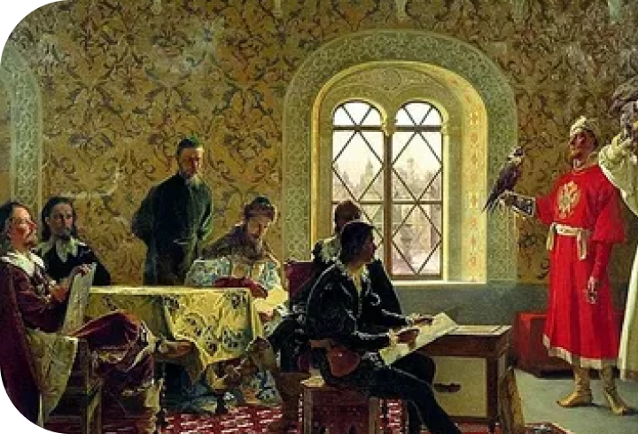
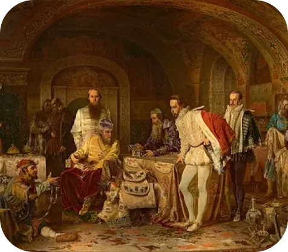

В музыке и картинах этого времени был характерен религиозный мотив. Сцены из библии, изображения Христа, Девы Марии и святых. Но имело место быть и обычной жизни: гравюры и картины часто можно было найти изображения улиц, людей, живущих своей жизнью.
Искусство